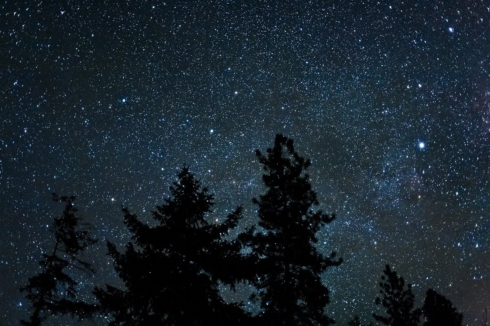

Blog · October 25, 2011
Hammocks for Astronomical Observatories


600 places where you can observe nebular gas clouds and ponder the universe. Learn a little and geek out with friends. Observatories are great places to enjoy champagne and good company, in my experience. I want to equip these wonders of science and human accomplishment with something which will make future visits all the more enjoyable: hammocks.
What better way to look at the sky than to sway in the breeze and simply open your eyes. The world is beautiful. Enjoy it. In a hammock. I am working through Huntsville Ideas, a 501(c)(3) to make side project happen. Contact me with questions or to get involved.
Indulge ideas. You might just come up with a new nonprofit venture that aims to make science a little cozier.
600 Hammocks for Astronomical Observatories. Project 600HAO.
Like it? Share it.
Check out the new beta website.
First published on my old blog, amyrobinson.wordpress.com, October 25, 2011.